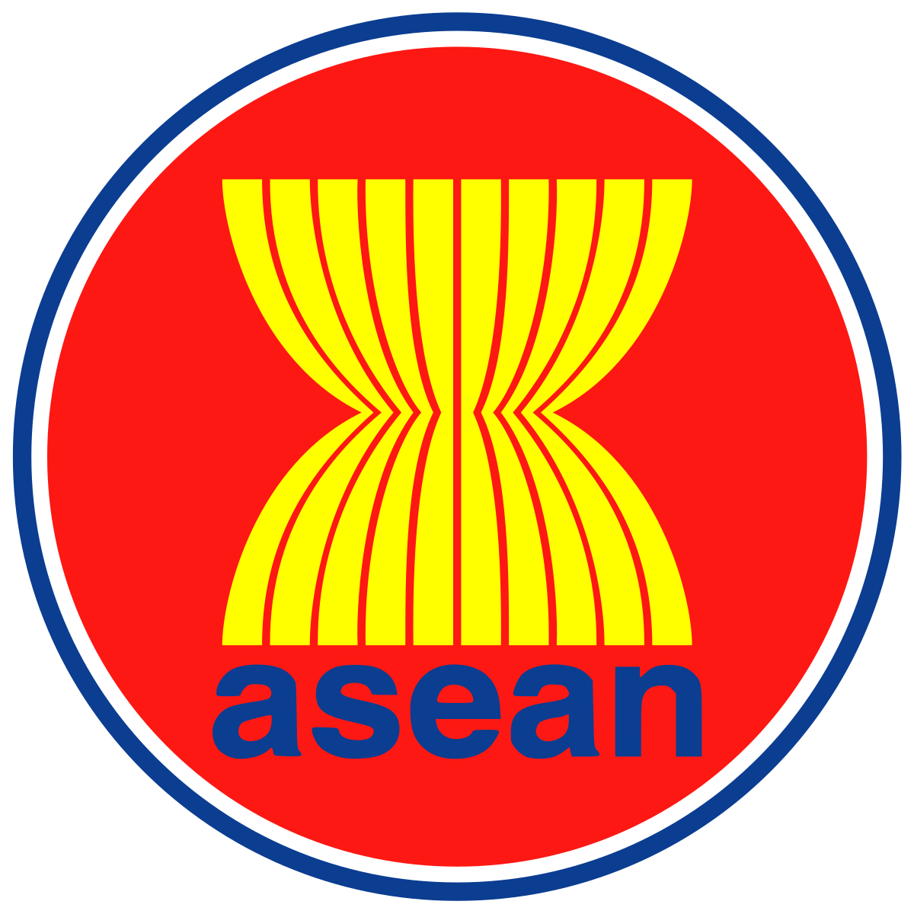

Merupakan kerjasama yang antar beberapa negara dalam suatu wilayah tertentu. Biasanya kerjasama regional dilatarbelakangi oleh kedekatan wilayah dan kesamaan kepentingan, kesamaan aspek historis, sumber daya alam, dan pemasaran produk perdagangan.
Kerjasama Regional Asia Tenggara (ASEAN)
Kerjasama Regional Asia - Pasifik (APEC)
European Union (EU) atau Uni Eropa
Kerjasama antara negara-negara di kawasan Asia Tenggara, yang disebut Association of Southeast Asian Nation (ASEAN). Indonesia merupakan salah satu penggagas organisasi ASEAN yang berdiri pada tanggal 8 Agustus 1967 di Bangkok, Thailand.
Asia - Pacific Economic Cooperation (APEC) adalah forum kerjassama antara 21 negara ekonomi di lingkar Sanudra Pasifik yang berdiri tahun 1989.
Kerjasama angara negara-negara di Kawasan Eropa. Organisasi yang beranggotakan 27 negara ini, bertujuan untuk memastikan perdamaian, membuat kehidupan penduduk lebih baik, dan membuat seluruh bahasa dan budaya dihormati.